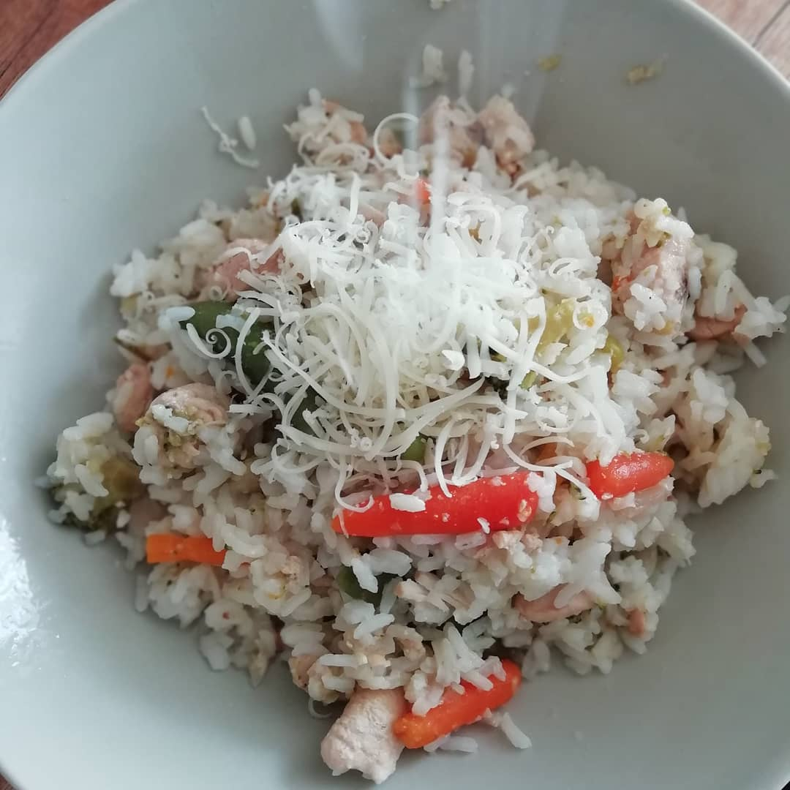

Zeleninové rizoto podľa @r_doublemama — Normy Jedál
Jednoduché rizoto pro děti #obed#lunch#lunchtime#prodeti#varimdetem#varimeslaskou#rizoto#zeleninoverizoto#ceskejidlo#czechfood#forchildren#doublemamavari#r_doublemama
Recept: rýže 250g, baby karotka, brokolice, hrášek, paprika, cibulka, kuřecí prsa, sýr na strouhání a máslo plátek
Postup: rýži uvaříme dle návodu, cibulku menší nakrájíme na drobno, na oliv. oleji osmahneme lehce, přidáme kuřecí maso a restujeme, než se maso zatáhne, poté hned podliji vodou a dusím, po cca 10min. přidám dusit papriku a baby karotku kasu, za dalších 10min. přidám hrášek a úplně ke konci na chvíli brokolici, nechám vyvařit vodu, ale ne úplně, přidám máslo, nechám rozpustit, lehce osolím a smíchám s hotovou rýží a je hotovo. Na talíři posypu sýrem.
Dobrou chuť.